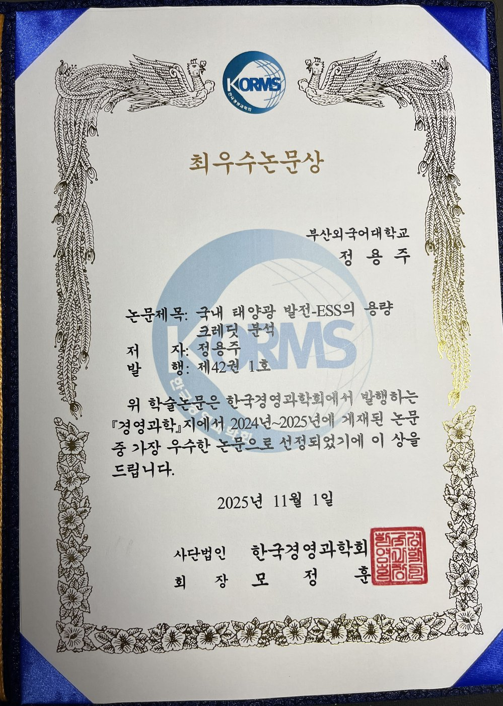

소개 About
정용주 교수는 연세대학교 경영학과를 졸업하고 KAIST 경영과학과에서 석사·박사 학위를 받았으며, KT 연구원을 거쳐 부산외국어대학교에 재직 중입니다. 경영과학(Operations Research)을 기반으로 초기에는 TDMA·WCDMA·OFDM 등 이동통신 네트워크의 자원관리와 최적화를 연구하였고, 이후 연구 영역을 에너지·환경 분야로 확장하여 태양광·풍력 발전의 용량크레딧(capacity credit) 분석, 상향식(bottom-up) 온실가스 감축 모형, 심층강화학습 기반 전력 스케줄링, 머신러닝 응용 연구를 수행하고 있습니다.
부산외국어대학교에서는 이비즈니스학과와 G2융합학부(학부장 역임)를 거쳐 현재 국제마케팅학과에서 디지털 비즈니스, 모바일 비즈니스·마케팅, 고객관계관리(CRM), AI 오피스 소프트웨어 등을 강의하고 있습니다.
학력 Education
-
박사 (Ph.D.)KAIST 경영과학과이동통신 네트워크 최적화 (Management Science / Operations Research)
-
석사 (M.S.)KAIST 경영과학과Management Science
-
학사 (B.A.)연세대학교 경영학과Business Administration, Yonsei University
경력 Career
-
현재부산외국어대학교 국제마케팅학과 교수G2융합학부 학부장 역임 · 이비즈니스학과 교수 역임
-
방문교수California State University, SacramentoVisiting Professor, USA
-
연구원KT통신 네트워크·기술 연구
-
연구원KAIST 산업경영연구소
수상 Awards
-
한국경영과학회 최우수논문상 (2025. 11.)

상장 (클릭하면 크게 보기)
연구논문 Publications
국제 학술지 (International Journals)
- Marginal Capacity Credit Analysis for Utility-Scale Solar and Wind Power: A Case Study in the Republic of KoreaSCIE doi.org/10.3390/en19020540
- Power Curve Modeling of Wind Turbines through Clustering-Based Outlier Elimination doi.org/10.3390/asi6020041
- Environment-Friendly Power Scheduling Based on Deep Contextual Reinforcement LearningSCIE doi.org/10.3390/en16165920
- Estimation of Methane Emissions from Reservoirs Based on Country-Specific Trophic State Assessment in KoreaSCIE doi.org/10.3390/w14040562
- Goodness-of-Fit Analysis for Wind Speed Distributions Using Measurement Data from Domestic Wind Farms in Korea doi.org/10.5757/asct.2022.31.4.93
- ELCC-based Capacity Credit Estimation Accounting for Uncertainties in Capacity Factors and Its Application to Solar Power in KoreaSCIE doi.org/10.1016/j.renene.2020.09.129
- Open Source-Based Modeling of Power Plants Retrofit and Its Application to the Korean Electricity SectorSCIE doi.org/10.1016/j.ijggc.2018.12.005
- Assessment of Mitigation Pathways of GHG Emissions from the Korean Waste Sector through 2050 doi.org/10.1016/j.serj.2017.12.003
- Bottom-up Analysis of GHG Emissions from Shipbuilding Processes for Low-Carbon Ship Production in Korea doi.org/10.5957/jspd.33.3.160013
- Investigating the Length of Data Collection Period with respect to Rate Constant in the First-Order Decay ModelSCIE doi.org/10.1007/s10163-015-0378-7
- Comparison of Emission Estimates for Non-CO₂ GHGs from Livestock and Poultry in Korea from 1990 to 2010SCIE doi.org/10.1111/asj.12456
- Mathematical Properties and Constraints Representation for Bottom-up Approaches to the Evaluation of GHG Mitigation PoliciesSCIE doi.org/10.1016/j.trd.2014.07.004
- Optimal Setup of Interference Threshold in a Multi-cell WCDMA EnvironmentSCIE doi.org/10.1016/s0140-3664(03)00098-7
- A New Lower Bound for the Frequency Assignment ProblemSCIE doi.org/10.1109/90.554720
- Spectrum-Efficient Call Control in a Dual-Mode TDMA Cellular SystemSCIE doi.org/10.1109/25.481832
국제 학술대회 (International Conferences)
- Heuristics for the Access Network Design Problem in 3G Mobile Communication Networks doi.org/10.1109/icicic.2008.303
- Subgradient Approach for Resource Management in Multiuser OFDM Systems doi.org/10.1109/cce.2006.350829
- Heuristics for the Access Network Design Problem in UMTS Mobile Communication Networks doi.org/10.1142/9789812773760_0008
국내 학술지 (Domestic Journals)
- 국내 태양광 발전-ESS의 용량 크레딧 분석 (Capacity Credit Analysis of Domestic PV-ESS)KCI academic.naver.com
- 폐기물 부문의 온실가스 배출 및 감축잠재량 분석KCI doi.org/10.7737/kmsr.2016.33.4.017
- 상향식 생산공정 분석을 통한 국내 유리산업 온실가스 배출량 산정KCI doi.org/10.7737/kmsr.2015.32.1.101
- 상향식 모형을 이용한 국내 주거부문의 온실가스 한계감축비용 분석KCI doi.org/10.5855/energy.2015.24.1.058
- 상향식 접근법에 의한 국내 시설재배 에너지부문 온실가스 배출량 및 감축잠재량 분석KCI doi.org/10.5855/energy.2015.24.4.146
- 상향식 접근법을 이용한 국내 조선산업 온실가스 배출량 분석KCI doi.org/10.7737/kmsr.2014.31.1.041
- SMDP-Based Optimization Model for Call Admission Control in an OFDMA Wireless Communication SystemKCI doi.org/10.7232/ieif.2012.25.4.450
- Exact Algorithms of Transforming Continuous Solutions into Discrete Ones for Bit Loading Problems in Multicarrier SystemsKCI
- 다중 셀 SC-FDMA 시스템의 무선자원관리에 관한 연구KCI
- WCDMA 네트워크에서의 위치관리 최적화 모형KCI
- Resource Allocation for Multiuser OFDM SystemsKCI
- 이동 액세스망 설계 (Mobile Access Network Design)KCI
- Traffic Modeling and Performance Analysis of Mobile Multimedia Data ServicesKCI
- 멀티미디어 데이터 트래픽의 특성 및 모델링 방안에 관한 조사
- IMT-2000 시스템의 데이터 트래픽 용량산출을 위한 시뮬레이터 academic.naver.com
저서 Books
-
머신러닝 입문: 개념과 연습
-
디지털 통신과 인터넷
-
U-네트워크 기술
-
멀티미디어 이동통신 (멀티미디어 리서치 연구총서 5)
프로젝트 Research Projects
-
온실가스 통합모형 연구단 — 상향식(bottom-up) 지역·전력 부문 모형 개발
-
지역부문 전력 모형 연구개발 국제 학술발표
-
신재생에너지 용량크레딧·전력 스케줄링 연구
-
IMT-2000 데이터 트래픽 용량산출 시뮬레이터 개발